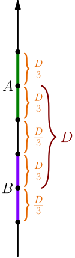
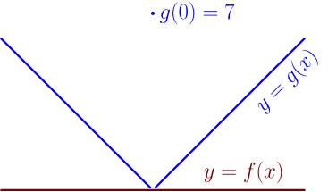

Inequality and Limit¶
Suppose that $f(x) \le g(x)$ for all numbers $x$ except $a$, and suppose that $\lim_{x \to a} f(x) = A$ and $\lim_{x \to a} g(x) = B$. Let's see what we can say about $A$ and $B$. It seems reasonable to expect $A \le B$, so let's see what happens if that's false, and we have $A > B$ instead.
Let $D=A-B$ denote the difference of the limits $A$ and $B$. We have $A > B$, so $D$ is positive. By the definitions of the limits, there's an input interval of $f$ corresponding to the output interval $(A-\frac{D}{3}, A+\frac{D}{3})$, and there's an input interval of $g$ corresponding to the output interval $(B-\frac{D}{3}, B+\frac{D}{3})$·

Just like before, the input intervals overlap, and there are numbers not equal to $a$ that are in both of the input intervals. Letting $o$ be one of these "overlap numbers", we get $$ f(o) \in \left( A-\frac{D}{3}, A+\frac{D}{3} \right), \qquad g(o) \in \left( B-\frac{D}{3}, B+\frac{D}{3} \right). $$ This leads to $$ f(o) > g(o), $$ which is impossible; we assumed that $f(x) \le g(x)$ whenever $x \ne a$, and we also have $o \ne a$.
We didn't even need the assumption that $f(x) \le g(x)$ for all $x$. Instead, it was enough that we found one overlap number, which gave the desired result. Instead of assuming that $f(x) \le g(x)$ for all $x$, we could assume that there's some open interval $I$ centered around $a$ in which $f(x) \le g(x)$; then we can choose $o$ such that it's in both input intervals and in $I$.
If $f(x) \le g(x)$ for all numbers $x$ in some open interval centered around $a$, and the limits $\lim_{x \to a} f(x)$ and $\lim_{x \to a} g(x)$ exist, then $\lim_{x \to a} f(x) \le \lim_{x \to b} g(x)$.
Note that $f(x) < g(x)$ does not imply $\lim_{x \to a} f(x) < \lim_{x \to a} g(x)$. For example, let $f(x) = 0$ and $$ g(x) = \begin{cases} x, & \text{if $x>0$}; \\ 7, & \text{if $x=0$}; \\ -x, & \text{if $x<0$}. \end{cases} $$

Now we have $f(x) < g(x)$ for all $x$. We get $$ \lim_{x \to 0} f(x) = \lim_{x \to 0} 0 = 0. $$ By calculating left and right limits, we get $$ \begin{align} &\lim_{x \to 0^+} g(x) = \lim_{x \to 0^+} x = 0 \\ &\lim_{x \to 0^-} g(x) = \lim_{x \to 0^-} -x = \underbrace{\left( \lim_{x \to 0^-} -1 \right)}_{-1} \, \underbrace{\left( \lim_{x \to 0^-} x \right)}_0 = 0, \end{align} $$ which shows that $\lim_{x \to 0} g(x)$ is also $0$. So, even though $f(x) < g(x)$ for all $x \in \mathbb{R}$, the limits of $f$ and $g$ are equal. This means that the graphs go very close to each other, but they never quite touch.